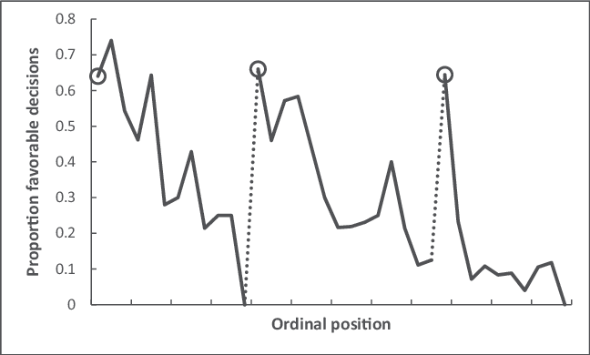

Вы замечали, как к вечеру становится сложнее принимать даже простые решения? Это явление называется "усталость от решений"...
Что говорит наука
Исследования показывают, что в среднем человек принимает около 35 000 решений в день. Каждое решение, даже такое простое как выбор носков утром, расходует наши когнитивные ресурсы...
Как снижается качество решений в течение дня
Утро: 92% правильных решений
Вечер: 48% правильных решений
Практические советы
Важные решения — до обеда
Переносите все значимые выборы на первую половину дня, когда ваш мозг ещё свеж...
Упрощайте рутину
Как Марк Цукерберг, носите однотипную одежду, чтобы не тратить силы на выбор...